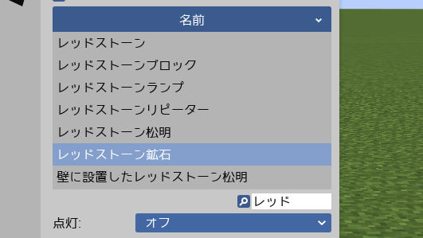

Mine-imator日本語訳ファイル
Mine-imator用日本語訳ファイル（milanguage形式ファイル）の配布サイトです。
7/8追記: Mine-imatorの最新バージョン（1.2.7）に対応した日本語ファイルを公開しました。以前のファイルを導入した方は、お手数ですが再導入をお願いします。
提供する日本語訳ファイルについて
有志により作成された非公式の日本語訳ファイルです。本サイトまたは日本語ファイルの製作者は、当該のソフトウェアの製作関係者とは無関係です。
ブロック名などはJava版の公式訳を使用してます。はみ出し防止のため、一部のカタカナは半角ｶﾀｶﾅに変換してます。
日本語検索することが可能なので、作業効率上がるかも。
Mine-imatorを日本語にさせるにはTTF形式の日本語フォントが必要になります。 ひらがな、カタカナ、英数、漢字が揃っているフォントであれば何でも構いませんので各自でお調べください。
Mine-imatorのバージョンが変わった際にはこちらのサイトを確認して適宜、新しい日本語ファイルと入れ替える必要があります。
改変の有無に関わらず、日本語ファイルを再配布することはできません。自作発言もご遠慮ください。
日本語ファイルを使用するにあたり生じたいかなるトラブル、損失等について製作者は一切責任を負いません。
ダウンロード
下のボタンを押して、ファイルをダウンロードしてください。
japanese.milanguage日本語にする方法
1.フォントと日本語訳ファイルを C: \ Users \ ユーザー名 \ Mine-imator \ Data \ Languages の中に入れます。
2.Mine-imatorの設定で Interface をクリックして Font: Default の下のフォルダマークをクリックして日本語のフォントに切り替えます。
3.さらに下のファイルマークをクリックして japanese.milanguage に切り替えます。
主な更新履歴
2020/07/08 Mine-imator 1.2.7に対応
2020/06/02 日本語ファイル公開
※記載のない更新は微修正です
連絡先
〇〇の訳が間違ってるとかがあればお知らせ下さい。基本的に連絡いただいた内容について回答はいたしません。
kaulef@yahoo.co.jp
TwitterID: @kaucly